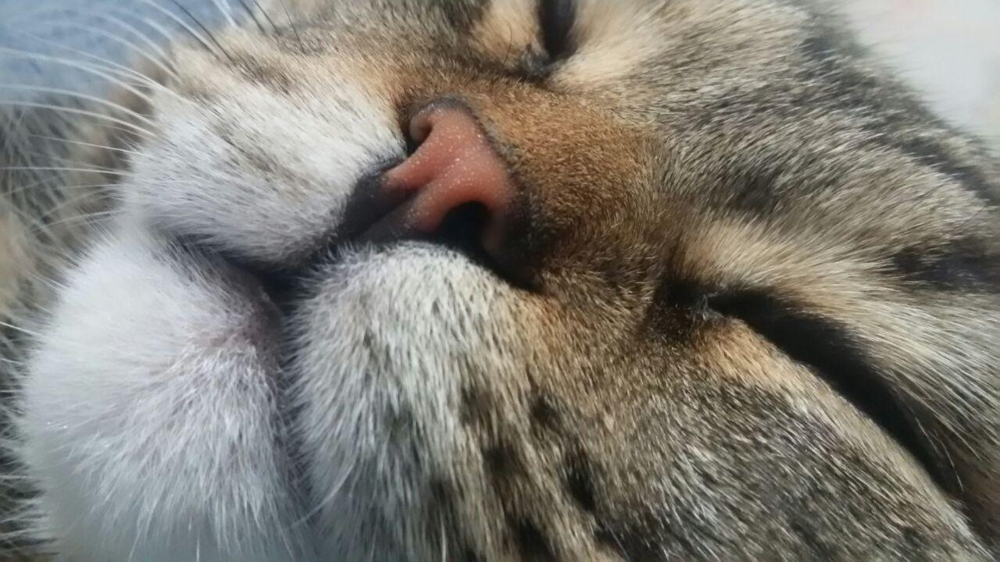

Характер кота багато в чому залежить від його породи. Давайте познайомимося з деякими представниками різних характерів.
До ласкавих кішок належать:
Абісинська
Мейн-кун
Перська
Сіамська
Сфінкс
До грайливих кішок належать:
Абісинська
Бенгальська
Сіамська
Сфінкс
Шотландська капловуха
До лінивих кішок належать:
Британська короткошерста
Перська
Селкірк рекс
Регдол
Шартрез
Більш детально познайомитися з породами можна
тут
.
Також Ви можете почитати про
їжу котів
і
рекомедації перед заведенням кота
.
Щоб повернутися до головної сторінки натисніть на носик
